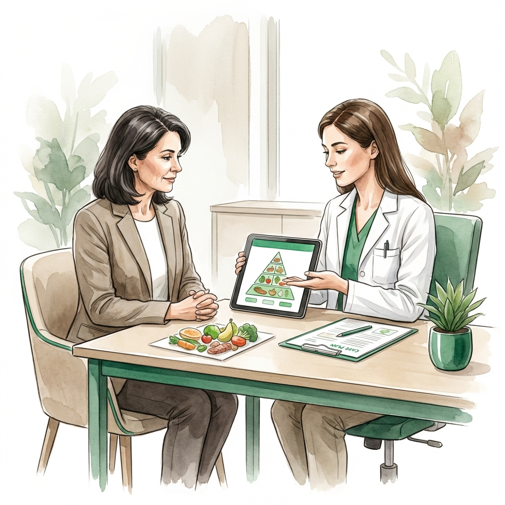
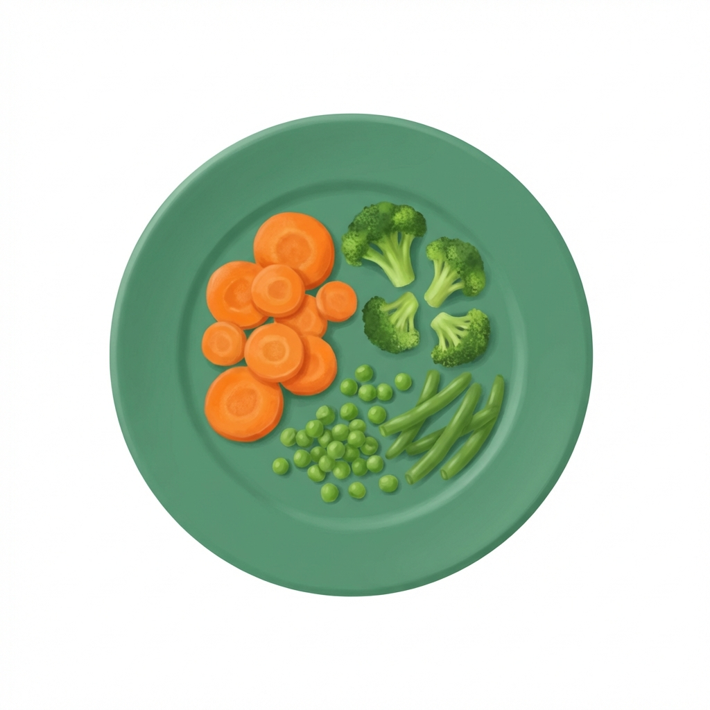
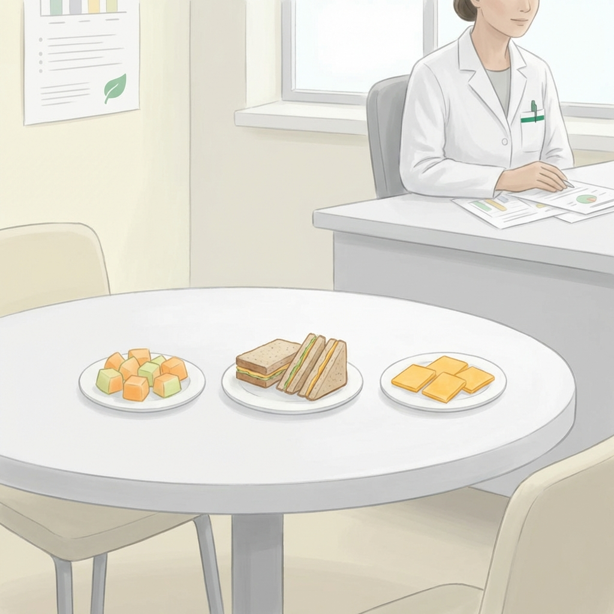

Nutrición Especializada para la Enfermedad de Alzheimer
Intervención clínica para el manejo de la pérdida de apetito, disfagia y desnutrición, con un fuerte enfoque en la capacitación a familiares y cuidadores.
El Alzheimer presenta desafíos nutricionales que evolucionan constantemente. Desde el olvido de las comidas en etapas iniciales hasta la dificultad para tragar en fases avanzadas, cada paso requiere una estrategia diferente.
En Clínica Denki, entendemos que la alimentación es una de las tareas más demandantes para el cuidador. Por ello, transformamos la nutrición en una herramienta de bienestar y seguridad para el paciente y de tranquilidad para su familia.
Evolución de las Necesidades Nutricionales
Adaptamos nuestra intervención clínica a cada etapa de la enfermedad.

Etapa Inicial y Moderada
Manejo de olvidos, organización básica y uso de 'Finger Foods' para fomentar la autonomía.
Etapa Avanzada y Riesgo
Gestión de disfagia mediante texturas modificadas y entrenamiento técnico al cuidador.
Estrategias Prácticas de Alimentación
Implementamos soluciones que respetan la dignidad del paciente y simplifican el cuidado diario.

Contraste Visual: El uso de platos con colores contrastantes (como nuestro Plato Esmeralda) ayuda a que el paciente identifique claramente el alimento.

Guías para el Hogar
Información técnica para mejorar el cuidado del paciente neurológico.
Preguntas de Familiares
¿Por qué mi familiar solo quiere comer dulces?
Es común en la demencia debido a cambios en los receptores del gusto. Buscamos integrar esos sabores de forma nutritiva y controlada.
¿Es normal que haya perdido tanto peso?
La pérdida de peso es frecuente pero peligrosa. Un plan de alta densidad calórica adaptado puede ayudar a estabilizarlo.
¿Ofrecen visitas a domicilio?
Sí, es lo ideal. Nos permite evaluar el entorno real donde el paciente se alimenta y capacitar al cuidador en su propia cocina.
Apoyo Profesional para tu Familiar y para Ti
Accede a una consulta especializada y redescubre cómo la nutrición puede mejorar la vida en el hogar.
Atención en Clínica, a Domicilio y Online